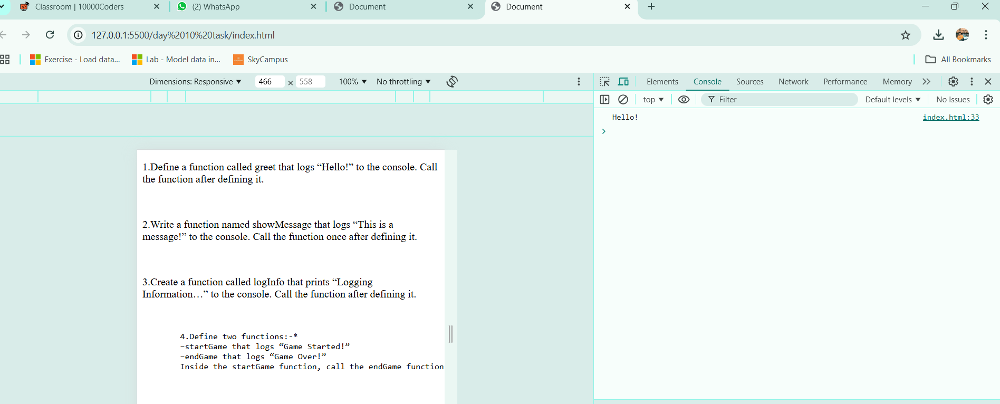
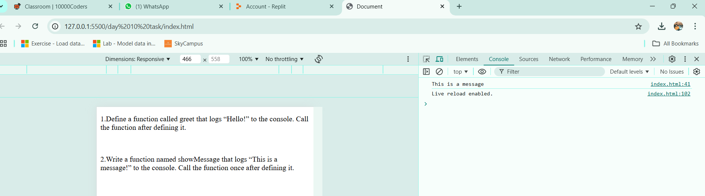
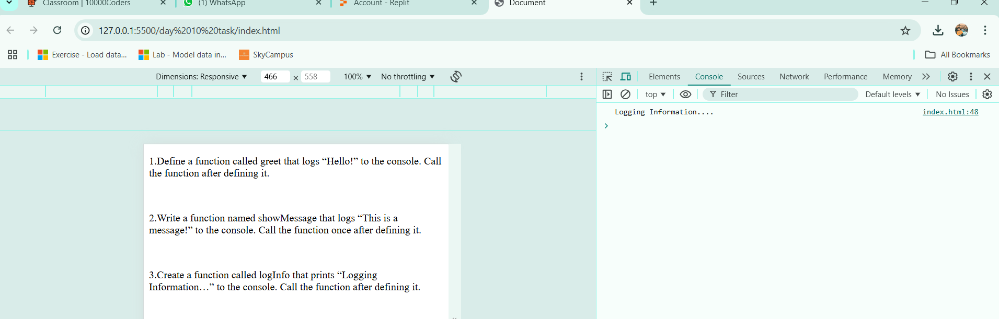
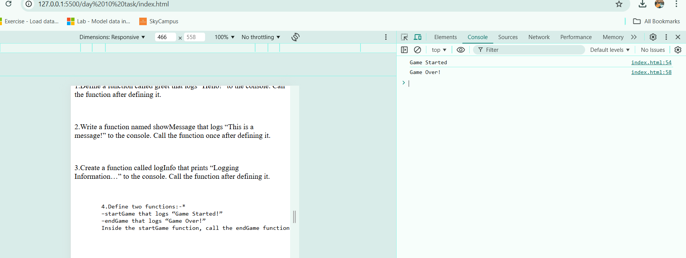
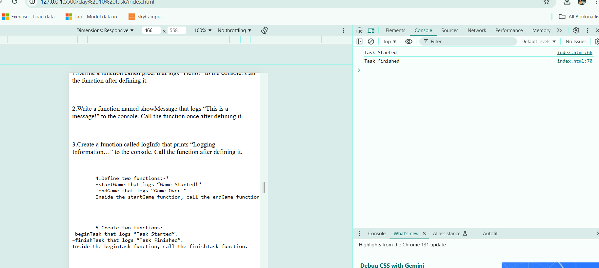

1.Define a function called greet that logs “Hello!” to the console. Call the function after defining it.
2.Write a function named showMessage that logs “This is a message!” to the console. Call the function once after defining it.
3.Create a function called logInfo that prints “Logging Information…” to the console. Call the function after defining it.

4.Define two functions:-*
–startGame that logs “Game Started!”
–endGame that logs “Game Over!”
Inside the startGame function, call the endGame function.

5.Create two functions:
–beginTask that logs “Task Started”.
–finishTask that logs “Task Finished”.
Inside the beginTask function, call the finishTask function.
